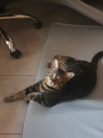

- Instagram (Mais que Low Profile) do meu dono.
- Instagram (Mais que Low Profile) do meu dono. - Canal do Youtube (vergonhoso) do meu dono.
- Canal do Youtube (vergonhoso) do meu dono.
Bom, esse exercício era sobre uma auto apresentação, porém eu decidi fazer uma apresentação um pouco diferente, esse aqui é o Filó, tá de mudança e não sei quando vou ver meu gato de novo. Minha mãe insiste em chamar a criatura de Zek, nem pra estadunizar o nome do bicho ela se prestou. Vou sentir saudade das loucuras meu gatinho... Papai ama muito você. Aproveite a vovó por mim 😻
- Instagram (Mais que Low Profile) do meu dono. - Canal do Youtube (vergonhoso) do meu dono.